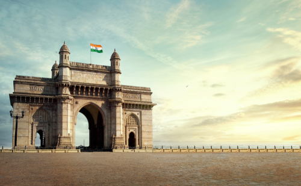
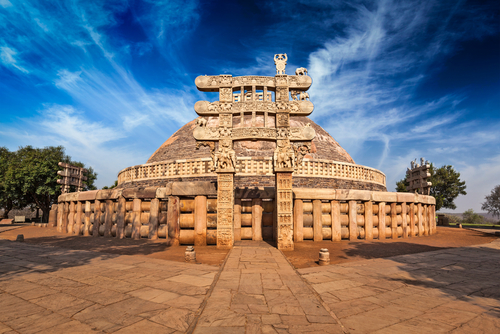
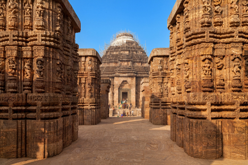
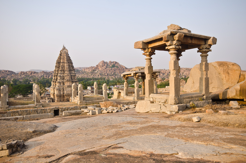

The Gateway of India in Mumbai is a great historical monument built during the British rule. It was made to honour the visit of King George V and Queen Mary to India. The foundation stone for the structure was laid on March 31, 1911 and it was completed in 1924. During the British rule, this was used as the arrival point for visitors from the west. The archway is 26 metres high and linked with four turrets and has intricate lattice work carved on stones. The Gateway of India is constructed with yellow basalt stones. Its design includes Victorian, Gothic, Hindu and Islamic architectural styles, commonly known as the Indo-Saracenic style. This iconic arch monument, the Gateway of India was built by Scottish architect George Wittet. There is a great historical significance attached to the Gateway of India. It is the point from where the last British troop had left India. The structure is illuminated at night, making the whole area look magical.

Sanchi Stupa is one of the oldest stone structures in India built during the Mauryan period. Sanchi, a historical place is 46 kms from Bhopal (Madhya Pradesh) the Mahastupa (great stupa), the Ashokan pillar (with its inscriptions), and beautiful torans are all noteworthy features of the Sanchi complex (gateways). Sanchi, a World Heritage Site, has sculptures, monuments, and lush gardens. The height of the Sanchi Stupa is 54 feet, and the width is 120 feet. Built during the rule of emperor Ashoka around the 3rd century BC, the architecture of the Stupa include ‘Toranas’ that reflect love, peace, courage and trust. The main hemispherical body of the Stupa symbolises the cosmic mountain. It is crowned with a three-layered umbrella-like edifice or ‘Chhatrapati’ to represent the three jewels of Buddhism – Buddha, Dharma and Sangha. The national emblem of India is acquired from the Lion capital, found at Sarnath and Sanchi.

Konark Sun Temple is dedicated to the Sun god. The temple is an embodiment of architectural brilliance. This temple is also known as the Black Pagoda. It is an incredible masterpiece of architecture that attracts tourists from all over the world. The specialty of this temple is the impressive gigantic chariot of around 100 ft with wheels and decorated horses carved in stones on each side of the temple. The Konark sun temple, a UNESCO World Heritage Site, was built by the Eastern Ganga dynasty king, Narasimha Deva I, in the 13th century. The temple looks like a chariot with twenty-four wheels and seven horses, all carved from stone. Its geometrical patterns and carved wheels served as sundials. The temple faces east, so the first rays of sun lit up the main entrance of the temple. Konark is about 35 kilometres northeast of Puri and 65 kilometres southeast of Bhubaneswar. The stone temple has been designed with three types of stone. Chlorite, for doors and frames; Laterite, for platform and staircase, and Khondalite was used for other parts of the temple. There are intricate carvings on the walls of the main temple, and there is Natya Mandap, which is a separate structure located in front of the temple).

Hampi, a fortified town in Karnataka, was the capital of the Vijayanagar empire in the 14th century. Hampi has around 1,600 monuments, also referred to as the Group of Monuments, spread over 41.5 sq kms. Hampi is a UNESCO World Heritage Site that includes temples, street markets, bastions, treasury buildings, and remains of the Vijayanagar empire. A visit to Hampi reveals the best examples of aesthetics and styles in architecture. Virupaksha Temple, having a Lord Shiva statue carved in stone, is worth visiting. The other attractions are the Queen’s Bath, Vijay Vittala temple, Elephant Stables, and Hampi Bazaar. Vittala temple or Vijaya temple of Hampi is among the ancient historical places to visit in Hampi. The Vijaya Vittala temple has 56 musical pillars also known as SaRiGaMa Pillars, four of the seven musical notes. The pillars produce musical notes when struck with a thumb. This is the true architectural brilliance of Hampi as it represents an extraordinary architectural marvel. The most intriguing thing is that the columns are constructed using stones. Steeped in 1,400 years of history, Hampi is a must-visit destination for tourists who love art and history.

Victoria Memorial, also known as Victoria Memorial Hall, is one of the most popular historical places in Kolkata, West Bengal. The Victoria Memorial monument-cum-museum stands as a reminder of the city’s colonial and architectural heritage. Nestled amidst green lawns, this opulent memorial made up of marble is one of the top tourist attractions in Kolkata. Victoria Memorial features the Indo-Saracenic revivalist architectural style, which is a blend of Mughal and British elements with Egyptian, Islamic, and Venetian elements. The Victoria Memorial is the brainchild of Lord Curzon, a Viceroy of India. When Queen Victoria, the empress of Britain, died in January 1901, Curzon suggested building a grand memorial to honour her. The foundation for Victoria Memorial was laid on January 4, 1906, by the Prince of Wales, who subsequently became King George V. A 16-ft-tall bronze statue of victory, mounted on ball bearings at the top of the memorial, adds to the grandeur of the complex. The building was inaugurated for public visits in 1921. Made up of white Makrana marble, the edifice has dimension of 103 x 69 x 56 metres. It has 25 galleries, including Calcutta Gallery, Portrait Gallery, Royal Gallery, Sculpture Gallery, and National Leaders Gallery, among others. The Victoria Memorial Museum has more than 28,000 artifacts, including paintings, weapons, textiles, etc. The Victoria Memorial light and sound shows in the evening take viewers on a fascinating journey through Kolkata’s rich heritage and history.

Khajuraho is an ancient city in Madhya Pradesh, now a UNESCO World Heritage Site. The erstwhile capital of the Chandela Dynasty, Khajuraho is famous for its temples considered to be among the best examples of the Nagara-style medieval Indian architecture. The Khajuraho temples were largely constructed between 950 AD and 1050 AD. The ‘Khajuraho Group of Monuments’ is famous for its sculptures of nayikas and deities. Historical records show that the Khajuraho temple site had 85 temples in 12th century (in 20 sq km about 25 temples have lasted, spread over six sq km). Of the surviving temples, Kandariya Mahadeva Temple has sculptures with intricate details, symbolism, and expressiveness of ancient Indian art.

The Taj Mahal is one of the most famous historical places in India, which attracts tourists from everywhere. Located in Agra, this symbol of love is situated at the bank of river Yamuna. The Taj Mahal is an ivory-white marble mausoleum built in 1632 by Mughal emperor Shah Jahan in memory of his wife Mumtaz. This UNESCO World Heritage Site embodies the grand Mughal architecture. The monument’s construction began in 1632 and was finished in 1648. The marbles were sourced from Makrana, in Rajasthan. The Taj Mahal’s main structure is surrounded by gardens, pools and fountains. The interior octagonal chambers are linked with diagonal passages. The interior and exterior of the main building is designed with screens, calligraphy, and inlay work.

The Qutub Minar, Delhi is hailed as the tallest minaret in India. This UNESCO World Heritage Site is also known as the ‘Tower of Victory’. Designed with red sandstone and marble, the minaret is known for its historical and architectural significance. The historical place in India is an example of the Indo-Islamic architecture. The foundation for the structure was laid in 1192 by ‘Qutb-ud-din-Aibak’. It was built to celebrate Mohammed Ghori’s victory over Rajput king Prithviraj Chauhan. The tower was constructed in three phases and the final phase was done by Firoz Shah Tughlak in 1368. Delhi ruler Allauddin Khilji made some additions to the structure in 1315. You can see verses from the Holy Quran carved in Kufic style of Islamic calligraphy on the walls. Qutub Minar, 240 ft in height, was built to glorify the Muslim kingdom in northern India.

Amer Palace (popularly known as Amer Fort) is a must-visit historical place in Jaipur. Its rich history combined with the beautiful landscape attracts tourists from all over the world. You can opt for an elephant ride to experience the regal way of entering the Amer Palace. Amer was the erstwhile capital of the state, before Jaipur. The fort has influence from both Hindu and Muslim architecture. This fort also has ‘Shila Devi’ temple and ‘Ganesh Pol’, a gate that leads to the private palaces of kings. The Amer Fort has various pavilions and halls. This UNESCO World Heritage Site was constructed with yellow and pink sandstone and has four levels, each having a courtyard. Raja Man Singh built the Amer fort in 1592 AD and Raja Jai Sigh I expanded and renovated it later. This magnificent fort has withstood many invasions. It has four different parts, each having a separate entrance. The main entrance of the Amer Fort is the ‘Suraj Pol’ or Sun Gate. The second courtyard is famous for its ‘Diwan-i-Aam’ (public audience hall), ‘Sheesh Mahal’, and ‘Sukh Mahal’.

Ajanta and Ellora Caves are among the earliest Buddhist architectures and well-known historical places in Maharashtra. The Ajanta caves, numbering 29, were built between the 2nd century BC and 6th century AD. The 34 Ellora caves date to the period between the 6th and 11th century AD. It is one of the largest rock-cut monastery cave complexes in the world. The paintings and sculptures in the Ajanta and Ellora caves, which is a UNESCO World Heritage Site, are masterpieces of Buddhist religious art that had a significant impact on the growth of art in India. Caves from both the places are cut out from the volcanic lava of the Deccan plateau. The caves are separated by a distance of 100 kms. While Ajanta is mostly about beautiful paintings made on cave walls depicting Buddhism, Ellora is all about sculpture and architecture. Ajanta caves have crescent shape in the form of a huge horseshoe. Of the 29 Buddhist caves in Ajanta, four were used as Chaitya or prayer halls. The remaining 25 caves were used as Viharas, for residential purposes. The Kailasa temple, dedicated to Lord Shiva, is the largest monolithic rock-cut temple in the world.